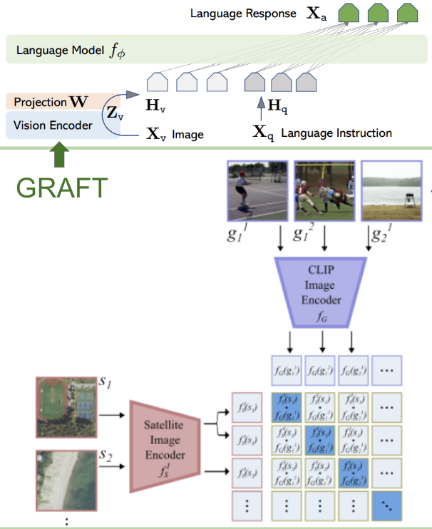
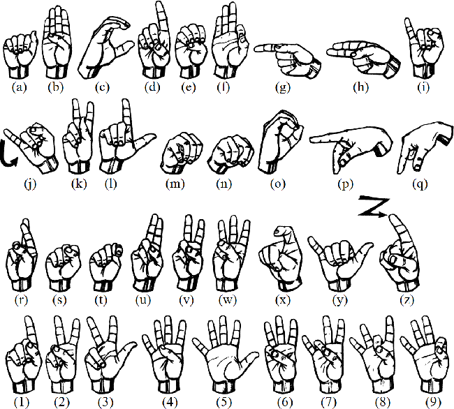
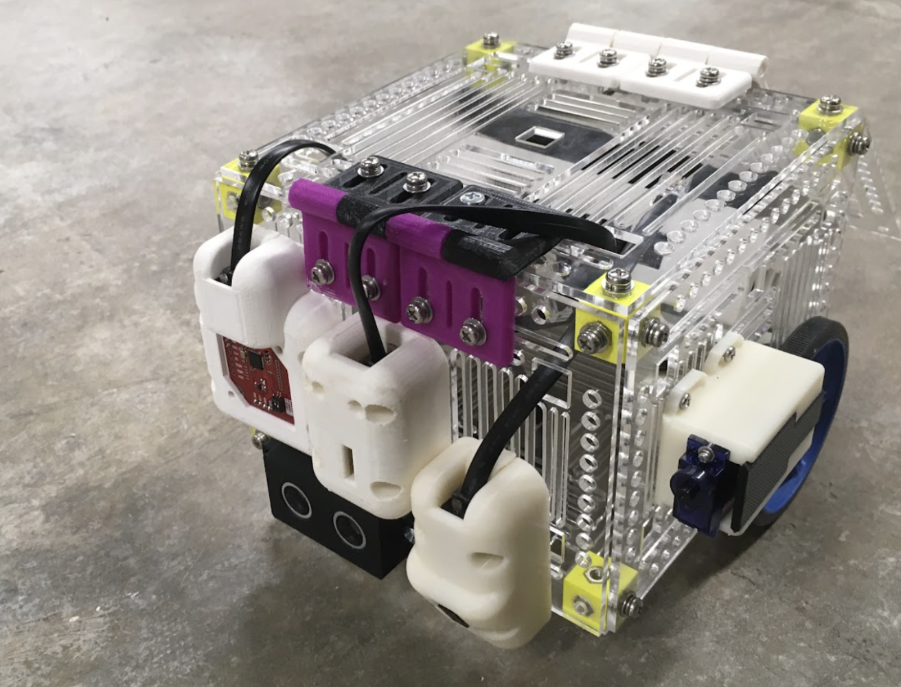
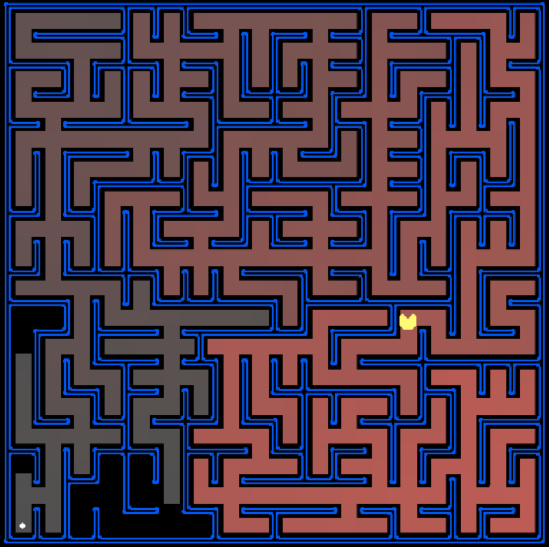
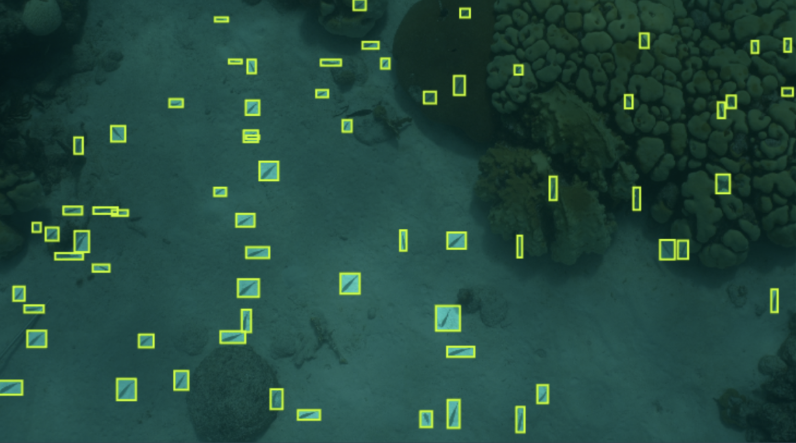

About Me
I’m a senior at Cornell University specializing in Computer Science and Operations Research. I build AI-driven solutions to real-world challenges, focusing on machine learning and computer vision.
I thrive in the intersection of cutting-edge research and practical applications. I’m seeking opportunities in software engineering or research-focused roles.
Get in TouchSkills
From Machine Learning to Web Development, here are some areas I'm proficient in:
Experience
Software Engineering Intern @ NetEase
Jun - Aug 2023
Boosted UI performance and built a smarter chatbot to enhance user experiences on a low-code development platform.
Research Assistant @ Cornell Vision Group
Jun 2024 - Present
Developed vision-language models to answer questions from satellite imagery with improved reasoning capabilities.
Undergraduate Researcher @ SciFi Lab
Feb 2024 - Present
Built gesture-recognition interfaces for AI glasses, enabling seamless virtual keypad interactions.
CS Subteam Member @ Cornell Cup Robotics
2024 - Present
Designed educational robots and built chatbots for natural language interactions using custom GUIs.
Projects
Pac-Man AI Simulation
Designed game agents for Pac-Man using adversarial search, reinforcement learning, and stochastic algorithms.
Chromis Fish Counting
Leveraged YOLOv8 and clustering to estimate fish populations from underwater video data with improved accuracy.
Contact Me
Have a question or want to discuss a potential collaboration? Let’s talk!